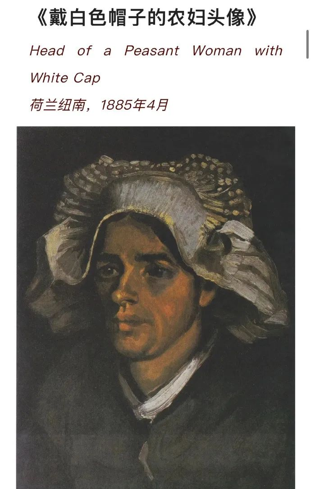

热点2023年1月|媒体报道中的女性

【清粪工—最有味的环卫女工】“为什么很少见到女性从事挑粪工？”某乎上有人提出了这样的一个问题；有人留下的这样的回答，“只是女性天生力气小不适合这份工作而已。”(图一）
但是哪里不适合呢？根深蒂固的性别歧视和刻板印象严重影响了他们对事物的客观认知。光是被新闻报道过的女性挑粪工数量就不少，而且工作都很出色，有口皆碑。
90后“掏粪工”成雅婷工作中使用的疏捞勺近2米长，3斤多重。疏捞工作是体力活，每一次都需要掀开井盖，再用铁钩将井盖上的淤泥清干净，将长长的疏捞勺伸进下水道里，挖上黑臭的淤泥，等污水漏干，用双手紧握疏捞勺用力上拉。（图二）
北京市东城区“三八”女子抽粪班班长 的李萌，她负责二十多座粪井的粪便抽运工作，战斗在冬天零下十度的寒风中，独自掌控百余斤重的加压粪管，哪怕是春节也不离岗。（图三）
济南市的曹玉含也是一位90后的姑娘，她曾是一名女兵，退伍后来到山东省济南市城肥清运管理一处做了一名清疏工。每天走街串巷、风吹日晒，与粪便污物打交道，任劳任怨，兢兢业业。（图四）
你所不了解的，是正在发生的。你所以为的，是毫无根据的。打破刻板印象，消除就业歧视，她们是女性劳动者，她们不应该被忽视，她们应该被看见。（编辑：撕纸 ）
全文链接：https://weibo.com/5327831786/MmUoE7PTD
就非婚生育率而言，根据2018年的数据，经合组织国家中平均有41%的新生儿为非婚生育；在北欧和西欧地区，部分国家如丹麦、法国、冰岛、荷兰、挪威、瑞典，非婚生育率超过50%。
第二次人口转变与政治民主化进程和物质条件改善后个体的自我实现需求相伴而生。避孕技术的发展、性革命与性别平等运动，特别是其中女性力量的崛起，同样起到推动作用。个体亲密关系更加注重情感本身，不同生活方式和相处模式并存。
2018年经合组织数据显示，日本未婚母亲登记生育的比例仅为2.3%，韩国为2.2%，位列经合组织国家末尾。研究者认为，东亚儒家文化圈内强调婚姻和生育的联系，围绕未婚生育的耻辱文化观念以及法律政策歧视(包括中国过去的计划生育政策)共同造就了这一区域非婚生育率的低下。
在中国人口增长乏力，生育持续走低的背景下，国家对人口政策进行重大调整，先后出台全面二孩和非婚生子合法落户两项政策，减少了单身生育的政策性束缚。人口学家则预计，随着中国第二次人口转变进程的深入，不仅结婚年龄会继续推迟，同居、离婚和不婚更为常见，预计单身生育也会增加。
全文链接：https://weibo.com/5327831786/MqHCM5BQ9
#1888万彩礼事件初步判断系杜撰# 据@新京报我们视频 报道：近日，一上海网友发文吐槽被江西萍乡前女友提1888万元彩礼引发关注。文中称，他们曾一同留学决定回国结婚，因女方提出天价彩礼，两人最终分手。记者从萍乡市官方获悉，网帖上所反映内容已派发给相关部门介入核查。参与该事件调查的一位人士表示，根据出入境情况核查，初步判断该文章内容系杜撰，当地彩礼上百万都极少。萍乡市民政局相关负责人表示，2022年多次发出婚俗改革倡议抵制高价彩礼。
全文链接：https://weibo.com/5327831786/MnYY9m79t
全文链接：https://weibo.com/5327831786/MnaF5iEHm
哈佛大学经济系的Claudia Goldin——全球性别经济学的重要奠基人之一，问了一个重要问题：为什么离婚是坏事？
社会对于离婚的讨论，其潜台词似乎表达着离婚是个坏事。
事实上，对每个个体和家庭来说，幸福家庭的效用大于离婚，离婚的效用大于不幸福的家庭。假如离婚的决定是理性的，停止不幸福的家庭是个提高效用的行为。
重要的是，离婚本身并不是结局。理性离婚只是人生长河中的一个片断，是通往自我了解、各种可能和崭新未来的一个开始。
全文链接：https://weibo.com/5327831786/MqyCnnABX
旧社会的妇女是处在被压迫、被剥削、被歧视者的最下层...她们几乎统统是文盲...她们也想把这些感情表露出来...但又苦于没有文字的工具，于是就运用自己独特的才识，自己创造文字。”
全文链接：https://weibo.com/5327831786/MpNCnq4mF
廖华清，广东韶关乐昌人，1990年10月出生，2012年12月入伍。
从军十载，她巾帼不让须眉，瞄准实战苦练本领，征战赛场摘金夺银，千锤百炼成为特战尖兵。精通潜水、伞降、爆破、猎杀、格斗等20余项特战技能，熟练掌握立姿、单跪、双跪、侧卧、俯卧5种射击方式，带领小队出色完成伞（机）降训练、实兵演习等重大任务。
#特战女兵廖华清再次荣立二等功返乡# 参加陆军“特战奇兵—2018”考核比武，斩获女兵组第一名。先后被表彰为“全国巾帼建功标兵”、陆军“优秀共产党员”、陆军首届“强军精武标兵”、全军“四有”优秀个人标兵、“优秀士官标兵”，荣立个人二等功2次、三等功2次。
全文链接：https://weibo.com/5327831786/MpuBypQ5m
梵高笔下的女性，有荷兰的农妇、有深爱的母亲，还有生机勃勃的酒馆老板娘。这些烟尘并未隐入历史的灰烬，而是在梵高的笔下熠熠生辉，直至今日。

全文链接：https://weibo.com/5327831786/MonHxal5U
湖南株洲的吴女士在2013年生完一胎后就出现了漏尿的症状，没有过多干预的她在生完二胎后盆底肌受损情况更加严重，打喷嚏的时候甚至会尿透三条裤子，最近阳了之后持续的咳嗽也加剧了漏尿的程度，无奈之下只能前往医院就诊。
除了尿频尿急，尿失禁，阴道松弛，大便排出困难等问题，盆底肌受损严重的可能会出现盆腔脏器脱垂，建议女性患者出现问题及时修复，可以通过电刺激、生物反馈疗法，配合凯格尔训练以及家用盆底肌修复仪等及时进行干预治疗，达到锻炼修复盆底肌肉的目的。
全文链接：https://weibo.com/5327831786/MmS8w2eE1
事件：10月30日，第十三届全国人大常委会第三十七次会议审议通过新修订的《中华人民共和国妇女权益保障法》，该法将于2023年1月1日起正式施行。这是妇女权益保障法自1992年10月1日起施行以来的第三次大修，新法由过去的9章61条扩大至10章86条。
点评：新修订妇女权益保障法是其实施30多年来的又一次“大修”。其中，将男女平等基本国策纳入国民教育体系，建立拐卖妇女等侵权行为强制报告排查制度，完善预防和处置性骚扰、性侵害制度机制，加强对女性职场公平的保护，规定“标准化”公厕和母婴室等条款回应公众关切，体现了法律与时俱进对妇女权益的保护，也成为备受关注的亮点和热点。
此外，妇女权益保障法修订草案两次网上公开征求意见，分别收到40余万、30余万条意见，也是近年来收到意见数最多的法律草案之一，体现出社会各界对妇女权益保护的强烈关注，及随时代变化完善妇女权益保护法的迫切需求，尽管某些条款的修订难以尽数吸纳社会各界的意见建议，但妇女权益保障法此次大修确是我国依法保障妇女权益的重大进展、重要成果。
全文链接：https://weibo.com/5327831786/MmAc6aHeV